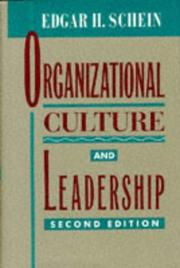

Organizational Culture and Leadership
Book·Edgar Schein, 1985·组织文化与领导力

Schein's systematic account of organizational culture.
- Author
- Edgar Schein
- Year
- 1985
- Difficulty
- Intermediate
- Kind
- Primary text
- Schools
- Field Theory and Group Dynamics
- Core theories
- Three Levels of Organizational Culture
Editions
- Chinese edition 《组织文化与领导力》 埃德加·沙因 (Edgar H. Schein) · tr. 章凯 / 罗文豪 · 中国人民大学出版社 · 2014 Douban 8.4 (133 ratings) Douban page ↗
- English edition Organizational Culture and Leadership Edgar H. Schein, Peter Schein · Fifth edition, Wiley · 2017 Open Library ↗